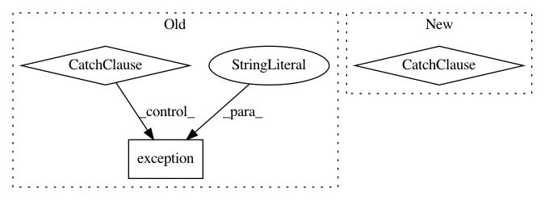

a38baccb172ccad77581662ce9f95cc012a48663,foreman/data_refinery_foreman/surveyor/management/commands/surveyor_dispatcher.py,,queue_surveyor_for_accession,#Any#,64
Before Change
except URLNotFoundNomadException:
logger.error("Dispatching Surveyor Nomad job failed (URLNotFoundNomadException).",
accession_code=accession, job=str(survey_job.id))
except Exception as e:
logger.exception("Unable to Dispatch Nomad Survey Job.",
job_id=str(survey_job.id),
reason=str(e)
)
class Command(BaseCommand):
def add_arguments(self, parser):
parser.add_argument(
After Change
try:
send_job(SurveyJobTypes.SURVEYOR, survey_job)
except:
// If we can"t dispatch this, then let the foreman retry it late.
pass
In pattern: SUPERPATTERN
Frequency: 3
Non-data size: 3
Instances
Project Name: AlexsLemonade/refinebio
Commit Name: a38baccb172ccad77581662ce9f95cc012a48663
Time: 2018-11-02
Author: kurt.wheeler91@gmail.com
File Name: foreman/data_refinery_foreman/surveyor/management/commands/surveyor_dispatcher.py
Class Name:
Method Name: queue_surveyor_for_accession
Project Name: home-assistant/home-assistant
Commit Name: 884525df33ffb939b354177d6f99ead8ccb28840
Time: 2015-10-25
Author: tom.duijf@gmail.com
File Name: homeassistant/components/media_player/plex.py
Class Name:
Method Name: setup_plexserver
Project Name: AlexsLemonade/refinebio
Commit Name: 1413b014e0211b11c4d602d50da8b86b1d9369ca
Time: 2020-02-19
Author: kurt.wheeler91@gmail.com
File Name: foreman/data_refinery_foreman/surveyor/external_source.py
Class Name: ExternalSourceSurveyor
Method Name: queue_downloader_job_for_original_files